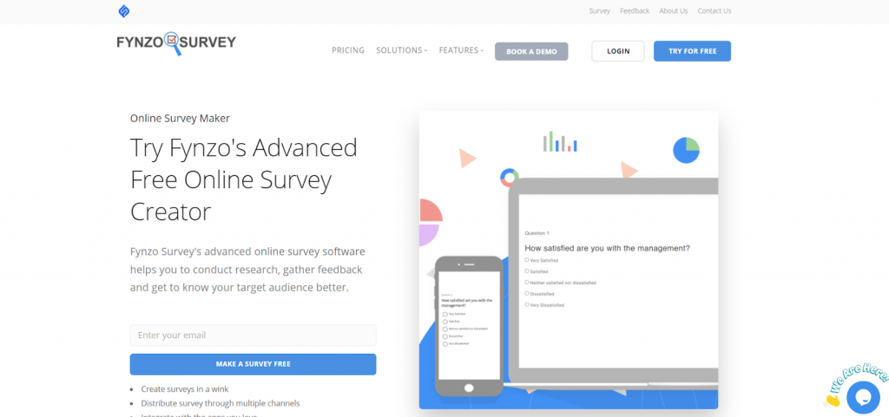
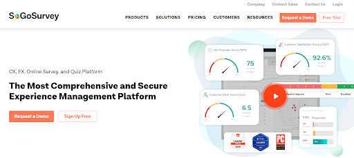

Online survey tools offer an efficient pathway for collecting customer feedback and concrete data for analyzing your company’s performance. However, sources suggest that around 80% of customers abandon their surveys halfway! Also, surveys have interfered with about 72% of the customer’s web experience.
Hence it is important to know how to increase your survey response rates and build an effective survey.
So after you have built efficient surveys, you can use them to know the answers to a variety of questions like ranking, open-ended questions, multiple-choice questions, etc.
If you are in search of a hassle-free way to successfully conduct market research or want the help of software that shows you how to create a survey, I would suggest you try out any one of these top 10 online surveys tools:
1. Fynzo Survey:

Fynzo Survey is affordable survey software that has unique offerings, making it an attractive option for creating surveys easily. It also offers a free trial during which no credit card details are required.
- They are available on multiple platforms. Forms can be accessed on Android, iOS, and Web.
- Provides a vast collection of survey templates. Fynzo’s online survey software provides more than 500 ready-made survey templates.
- This survey builder app facilitates easy integrations. It integrates with many of our favorite apps like Google Sheet, Google Analytics, Zapier, etc.
- Offers 24X7 support. If you require any support from their customer service attendants, they will be available around the clock to help their users out.
- A collection of advanced survey features for handling logic including validation, branching, and looping
2. Survey Sparrow:

This online survey tool allows users to convert simple surveys into conversational feedback tools. They make collecting feedback easier by providing a chat-like experience on your phone. Some special features are:
- Multi-device compatible surveys which make its accessibility easier
- Easy customization of surveys with the help of custom CSS and a variety of templates to choose from
- It has an engaging UI and a hassle-free refund policy. So if you don’t like what you bought, you can demand a refund.
- Set a benchmark for your NPS scores. Easily compare where you stand based on your NPS score, with respect to your competitors
- Integrate with multiple applications of your choice and add chatbots to your website
3. Typeform:

This online survey software is ideal for survey creators who do not possess much technical skills. Its interface is quite easy to use and shows one question at a time. Some key features can be:
- Create free surveys on any device of your choice like mobile phone, tablet, PC, etc.
- You can create your very own personalized question path based on your survey requirements
- It allows users to collect about 10,000 responses per month (up to 100k/mo is available)
- Integrate with numerous applications including Slack, Trello, Autopilot and many more.
- Create engaging surveys in the form of quizzes, contact forms, for selling a product or service
4. Survey Monkey:

This online survey platform provides 15 question types which include Likert scales and open comments. You can collect data online as well as through offline sources. Some features that make it stand out are:
- This tool allows credit card payments in a survey
- It offers efficiently created templates and questionnaires that can be utilized without having to create fresh surveys from scratch
- You can convert the survey results obtained into a report. It can help to analyze data without exporting it
- Survey monkey offers a unique characteristic that is the collection of survey responses in absence of any Wi-Fi connection
- It also sends you automated reminders through email and helps you filter custom data
5. Qualtrics:

This new-age online survey tool breaks the primitive barrier of surveys. It offers around 100+ question types along with a vast collection of readymade templates to start with. Key features include:
- Enabled features such as email triggers, logic branching, and display logic are available for a modern survey experience
- Choose from the 30 different graph types available and conduct non-modal question editing
- It offers over 100 question types and is very easy to use
- Check the synchronized previews of both mobile and desktop questionnaires before sending them out to your target audience
- Export the survey results obtained to CSV and SPSS as real-time web reports
6. Google Forms:

Google Forms are one of the most easily available, free online survey tools. It offers an easy drag and drop survey interface which makes survey creation easier than ever before. The number of features, though limited, can be mentioned as:
- The collected data on Google forms can be easily transported to other Google products
- You can receive real-time response information and charts which analyze the responses received
- Gather the data obtained on Spreadsheets and analyze them on Google Sheets easily.
- You can easily create quizzes for sending your audience and customize the design of your surveys
- It’s new autocomplete answers feature helps quiz makers save time by filling up answers to a given question through predictive analysis
7. QuestionPro:
This online survey tool helps you efficiently create surveys, quizzes, polls within a matter of a few minutes. This is an easy-to-use professional tool for large enterprises with its sharp representation. Few features are:
- You can utilize the multilingual customizable surveys for various purposes
- Choose among the 30+ question types provided and use its branding options for giving your surveys a more professional look
- Share these surveys directly with any social media platform of your choice
- It offers many advanced features like text piping, branching, looping, skip logic, etc.
- It becomes an online survey tool ideal for professionals because of its robust analytical reports
8. Zoho Survey:
Easily collect feedback from your audience and view survey results graphically in real-time. It is one of the most user-friendly survey tools available and works well until some high-level functionality is required. Few defining features can be:
- It offers a wide range of templates but its customization options are quite limited.
- Share your surveys instantly with others with the help of link sharing and other available social media platforms
- Invite your teammates to make changes to your surveys even in your absence
- Surveys here are mostly optimized for viewing on mobile phones.
- It uses CAPTCHA and multiple response protection options to prevent spamming.
9. SoGoSurvey:

It allows users to create sophisticated surveys which are professional enough for your survey recipients. It covers all the areas required for collecting customer feedback. Few special features can be:
- It can include Pivot tables in reports and offers bulk editing modes which makes it easier for users. 18 report types are available
- Many advanced support options available
- You can flawlessly work with multiple surveys with the help of a professional dashboard, reporting canvas, and merging options
- It is accessible on smartphones, tablets, and desktops
- However, the free version has limited functionalities and it will take some time to learn the features of this software.
10. 123FormBuilder:
123Form Builder offers a secure online survey software having a free plan which includes 5 forms and 100 submissions per month. The key features that make it one of the best are:
- It offers responsive forms. Their responsive layout makes filling out a form much like having a conversation with a person which increases engagement rates
- Reports received can be easily analyzed. Also, users can derive actionable insights as they are shown in the form of charts and graphs
- The Scan to Form feature of 123FormBuilder makes scanning of paper documents that are to be digitized easier. It also helps to import it
- Its drag and drop interface makes form creation easier. Also, its multilingual forms are super convenient
- It sends email notifications to users to keep them updated on the responses received.
Wrapping it
Select the online survey software of your choice based on your survey requirements. All of the above-mentioned software is quite efficient and caters to a variety of user needs. So there is no single best survey software but the one which caters best to your needs will be best suited for you. Do mention in the comments below, if you think we should have included any other survey tool in this list.
Author Bio:
Olivia Jones is a technical writer and a technology enthusiast who is currently associated with Fynzo. She enjoys researching customer support products like surveys and writes on business feedback needs and strategies. In her spare time, she loves reading and writing on surveys, marketing and major technological advancements.
Leave a Reply